Heat wave hiking in the Gila Wilderness
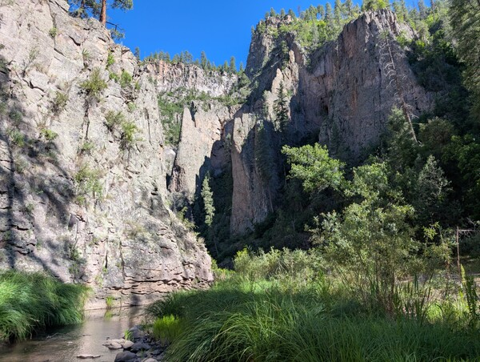
Last week I flew out to New Mexico to spend 4 days backpacking in America's oldest wilderness area. It would be my first backpacking trip outside the Northeastern US, and my first time hiking in desert and canyon terrain. Unfortunately it also happened to be right in the middle of a heat wave and drought, producing temperatures over 100 degrees and ensuring water would be scarce. I've never been one to shy away from bad weather, and I already had the nonrefundable plane tickets, so it ended up being a really uniquely challenging—and rewarding—experience.
Prologue: Gila Cliff Dwellings
Starting from the quirky town of Truth or Consequences, New Mexico, a friend and I drove three hours west over a scenic, steep, winding route to the start of the trail. Our 4-day, 38-mile route would start from the parking lot at Gila Cliff Dwellings National Monument. When we arrived at 11:00 on Tuesday, we decided to check out the cliff dwellings before we started.
An easy one-mile loop brought us up a canyon wall to the cliff dwellings, ancient Native American ruins built into natural caves.
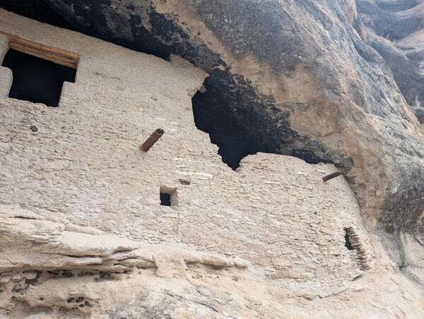
It was very cool to see these 700 year old ruins in the middle of nowhere, and definitely worth the short diversion. This trail was well-maintained and easy to follow, with informational placards about the dwellings, geology, and wildlife of the area. You could even walk inside some of the caves.
There were only a handful of other people around, all tourist types just here for the cliff dwellings. It was already over 90 degrees and the sun beat down relentlessly. We returned to the car and picked up our packs to start the real journey.
Day 1: West Fork
The cliff dwellings parking lot also provides access to a trail following the West Fork of the Gila River, which we would be following for the first 13 miles. The trail started as a flat stroll through grassy fields and low shrubs on sandy soil, which was quite nice and easy to follow.
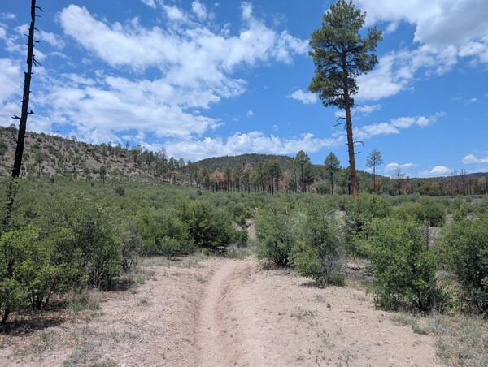
After .8 miles we reached the wilderness boundary, quickly followed by the first crossing of the West Fork. We knew we would have to cross the river over and over again as it would through the canyon, so we didn't even bother trying to keep our feet dry. The cool water actually felt pretty good in the afternoon heat.
As we continued to follow the river, canyon walls slowly started to rise up on either side of the path. Before we knew it we were surrounded on both sides by 400-foot sheer stone cliffs.
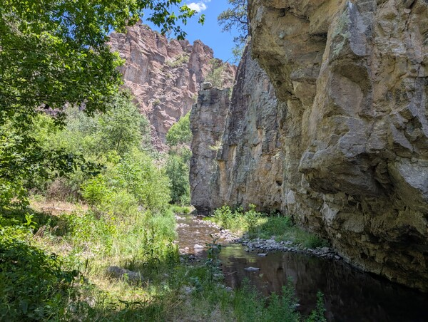
Although the surrounding area was hot and dry, the river created a riparian zone lush with green plants, birds, lizards, and other wildlife. It was interesting terrain to travel through, and totally unlike anything I've seen hiking the Northeast.
We spotted lots of interesting rock formations and several natural caves in the canyon walls. There was even some more ancient ruins in one of the caves, which was super cool to see.
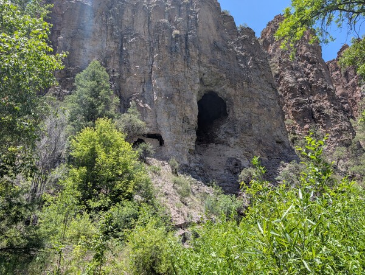
So far the trail had been pretty easy, gaining elevation very slightly as we followed the river upstream. Sometimes the trail would stray from the river for a while, but enclosed by the canyon walls it would always find it again within a mile. There were lots of stream crossings, but cooling off in the river helped combat the brutal heat. Sometimes it was difficult to tell where the trail continued after a crossing, but it always became obvious after a few seconds of blundering through the underbrush.
We knew we had a difficult climb coming up tomorrow though, so we tried to cover as much ground as possible on day 1 so we could hopefully do it earlier in the day before it got too hot. Around 18:00, after hiking 11.3 miles with 1800 feet of elevation gain, we decided to call it a day.
There are no artificial structures or designated campsites allowed in the wilderness area, but we saw plenty of nice backcountry sites with flat open tent spots and a stone fire ring. We weren't allowed to have fires because the drought conditions made a wildfire too likely, but with the extreme heat even long into the evening I wouldn't have wanted one anyway.
We set up camp and cooked dinner under a tall cliff as the sun set.
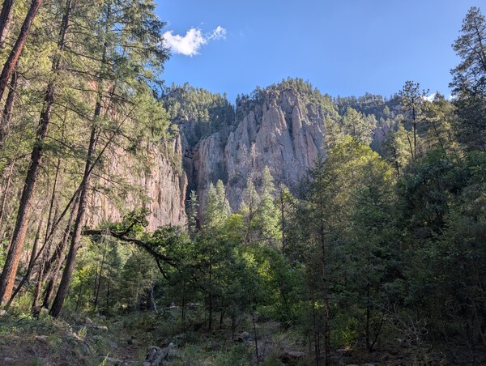
Day 2: Hells Hole
The next morning we woke with the sun at 6:00. It actually cooled off a lot at night, to a low of 55 degrees, which is perfect weather for hiking. We got a quick start, aiming to do the most difficult part of the trail before it got too hot out.
Two more miles up the West Fork trail brought us to the intersection with Hells Hole trail, the challenge we had been anticipating. From the river we would be gaining 1000 feet of elevation in 1.5 miles to get up on top of the mesa separating the West Fork from the Middle Fork. Now, by New Hampshire standards that grade would not even be considered steep, but the heat and lack of water added another layer of difficulty to the equation.
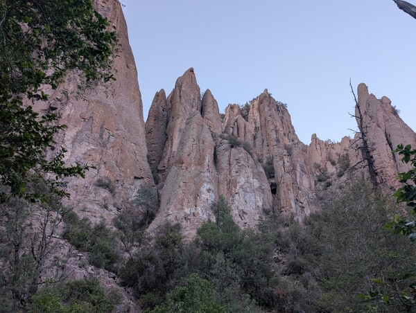
A hiker we crossed paths with on day one confirmed what we had been fearing: there was no water on top of the mesa. We were initially hoping to refill at Prior Creek 5 miles from the Hells Hole junction, but if that source was dry it meant we would need to do a significantly longer water carry. Now we were looking at 9 miles, up 1000 feet to the mesa, and down 1000 feet to the middle fork before we could get water again.
We ate breakfast, drank as much water as we could, and then filled up all our water bottles from the river before starting the climb.
I'm not sure why it's called Hells Hole trail, but it certainly felt apt as we climbed. The actual trail was a relatively gentle set of switchbacks up a dirt slope sparsely populated by ponderosa pines. But the rising temperature, glaring sun, and six extra pounds of water I was carrying all made it feel much more difficult. The only consolation was the increasingly impressive views that unfolded as we climbed higher on the mesa.
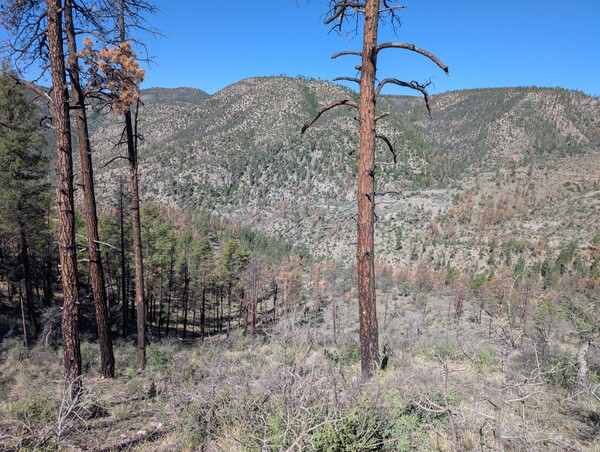
Finally after an hour of leg-burning strain we reached the top of the mesa and collapsed in the shade of a tree to rest. We may have avoided the worst of the afternoon heat, but it was already in the high 80s and still rising.
The terrain up here was totally different from the canyon below. The lush green plants of the riparian zone were replaced by rolling fields of dry brown grass and ponderosa pines. We turned left onto Lilley Park trail and continued on. At least the trail would be mostly flat from here.
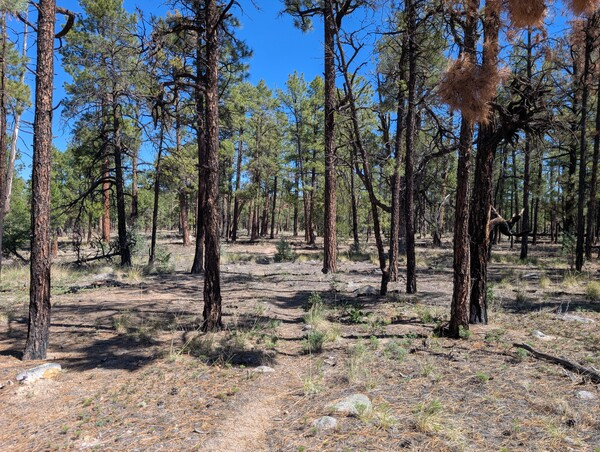
Forests like this apparently burn pretty often, and there were charred logs and blackened stumps interspersed throughout the living pines.
After 1.5 miles we were supposed to turn right onto Prior Creek Trail, but had some difficulty finding the intersection. Although the GPS said we were standing right on top of it, there was no sign and no evidence of another trail at all. We decided to just start walking in the right direction, the forest was open enough to navigate easily and we knew we were supposed to stay on a slight downward slope between two conspicuous hills so it was difficult to get lost.
Sure enough, after a quarter mile of wandering we picked up the correct trail. I'm still not sure if we just missed it or if the intersection really just disappeared.
Prior Creek Trail was a gentle downward slope and we made quick progress. Pretty soon we made it to Prior Creek and Prior Cabin, which was supposed to be our water resupply point. It was bone dry. We both still had a decent amount of water from the morning so we just kept going.
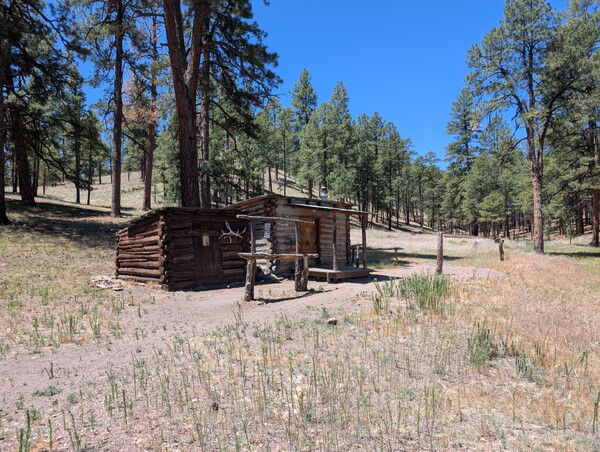
By this point it was after noon, and the sun was beating down on us. There wasn't a cloud in the sky, and we took whatever shade we could get from the trees. My thermometer was reading 100.
Torn between a desire to get back to a river as soon as possible, and a need to not over-exert in the afternoon heat, we tried to go slow and take frequent breaks.
Turning left onto Chicken Coop Trail, and then right onto Coop Mesa Trail, we continued through the ponderosa pine forest. Even a very gentle 200 foot climb as we neared the other side of the mesa felt exhausting in the brutal heat.
Finally the trail started descending seriously, and we could see the canyon of the Middle Fork of the Gila River looming ahead.
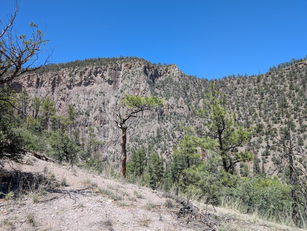
Catching sight of the flowing water at the bottom of the canyon raised our spirits. I quickly descended the 1000 feet of switchbacks the Middle Fork, ran into the river, and dunked my head in the cool water. We had completed the 9-mile water carry, and took another long break to celebrate.
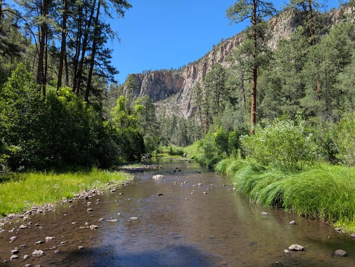
The initial plan called for camping on top of the mesa on day 3, but now that we knew there likely wouldn't be any water available we had to change plans. We decided to do as much of the Middle Fork trail as we could today, so we could do the entire second mesa section tomorrow and camp by the West Fork again, where we knew there would be water.
The more miles we covered today, the easier tomorrow would be, so we continued down the Middle Fork Trail with the four hours of sunlight remaining. The Middle Fork is similar to the West Fork, but more dramatic in every way. Higher canyon walls, bigger rock spires, denser vegetation, and a harder to follow trail.
Sometimes it wasn't clear if we were supposed to cross the river or continue pushing through the grasses and reeds on the side we were currently on. Fallen logs often blocked the path, and sometimes it seemed to disappear entirely. But we knew we would be following the river downstream. Sometimes at a distance, often close, and occasionally wading directly through the water.
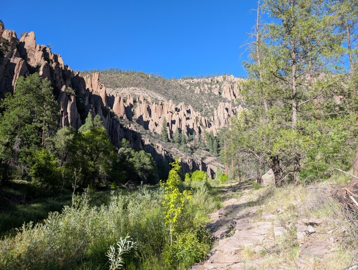
Constant interesting views and ample access to water made this section feel easier than the mesa section, even though the actual terrain was definitely more difficult. We ended up going 4 more miles on the Middle Fork before the sun started to set and we stopped to set up camp.
After the sun sank behind the canyon wall it cooled down to a comfortable temperature, eventually reaching an overnight low of 48. The stars were especially vivid in the cloudless sky, and I slept well after a long day. The total day 2 distance was 15.2 miles with 2200 feet of elevation gain.
Day 3: 108 degrees
The plan for day 3 would be much like day 2: a short prologue along the river, then a tough climb up the mesa, a long dry water carry, and then back down to the other fork. If all the smaller streams were dry, which seemed likely, it would be a 7-mile carry river-to-river.
With exhaustion from the previous day and a colder morning we got a later start, hitting the trail around 7:00. We had 2.5 more miles along the river before the ascent began. In the cool morning air with awe-inspiring rock walls and spires all around us, this was some of the best hiking I've ever done. We crossed and re-crossed the river dozens of times as the trail wound through the canyon, but I didn't even mind, it was just that scenic.
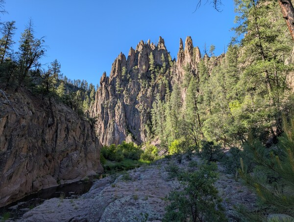
Eventually it had to end as we came to the intersection with Big Bear Canyon Trail. Again we ate breakfast, filled up on water, and mentally prepared for what was ahead.
The climb was only about 900 feet of gain over 1.5 miles along well-maintained switchbacks, it should have been easy. I don't think I realized just how much heat drains your energy until that climb. There wasn't a cloud in the sky, no trees for shade, and it was already over 90 degrees. The sun beat down without mercy. By the halfway point every step was painful, I had to stop every time there was a sliver of shade to catch my breath.
After what felt like a full day, but was probably only an hour, we finally made it to the top of the mesa. Here there were even fewer trees to provide shade, and it was unbearably hot. The few ponderosa pines gave way to spiky shrubs and rocky soil, then cactus and sand. We had no choice but to keep going.
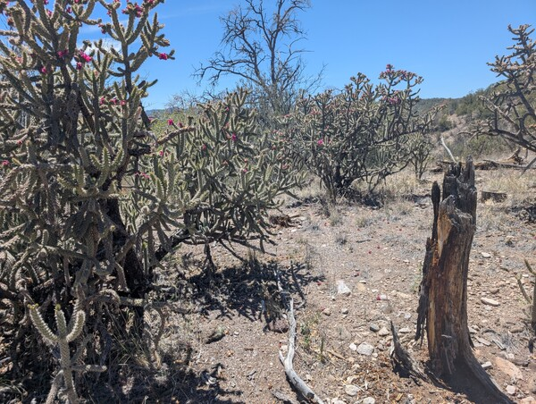
We passed over several dry stream beds as we crossed the mesa again. Without shade stopping doesn't even help you recover, you just keep baking in the sun, so we tried to just power through. Still, we rested when we could and remembered to keep drinking water and replenishing electrolytes. On one occasion when we stopped under a lone tree I checked my thermometer: it read 108 in the shade.
The high desert environment was at least interesting to look at. I saw lots of cacti, turkey vultures, various kinds of lizards, and other plants and animals I'm not used to in the Northeast. We also got some great views of the distant mountains and cliffs.
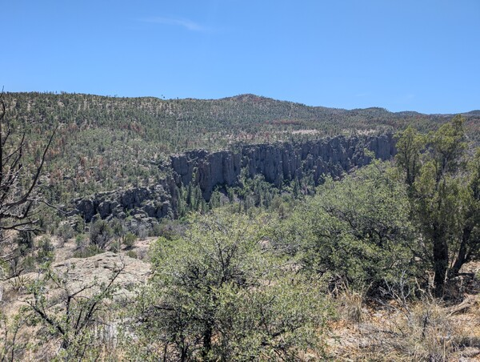
Finally after 6 miles of cross-desert travel without seeing a drop of water, we were at the top of the West Fork canyon. A steep and rocky set of switchbacks led back down to the river. There were some interesting rock formations along the trail but I was just looking forward to that cool river water.
When we finally reached the West Fork again, I just took my shoes and socks off and sat with my feet in the water for a long time. It was only 3:30 in the afternoon but we had completed the objective of the day and called it there, setting up camp by the river. We hadn't seen a single other person all day.
I spent the rest of the day resting in the shade at camp. The final distance for the day was 9.5 miles with 1600 feet of elevation gain.
Day 4: final mile
I slept great that night, once it finally cooled off, and woke up not even feeling sore. Because we pushed so hard on the first three days, we only had two miles to go back to the car for the final day.
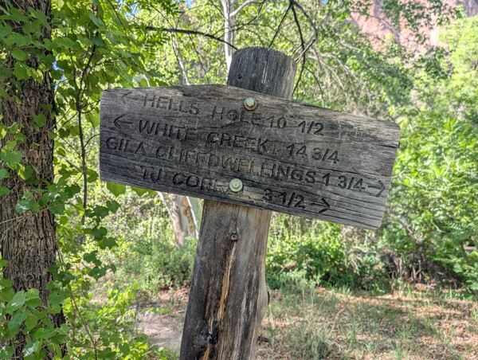
It was a quick retracing of the first two miles we did on day 1, and as we hiked out of the wilderness it suddenly felt like we were only out there for a very short time. Despite the heat and drought, the scenery was amazing and totally unlike anything I'm used to seeing in the Northeast.
We got back to the trailhead at 9:30 and started the long drive back to Truth or Consequences with a feeling of accomplishment, along with a desire to come back again. The total for the 4-day trip was 39.2 miles with 6000 feet of elevation gain.
This was my first backpacking trip out west, but it definitely won't be the last. Plants, animals, and trails out west are all so different, but the feeling of the sublime you get from the wilderness is universal. There are so many different places I still want to experience.
Maybe next time I visit the desert I'll pick a milder time of year though.